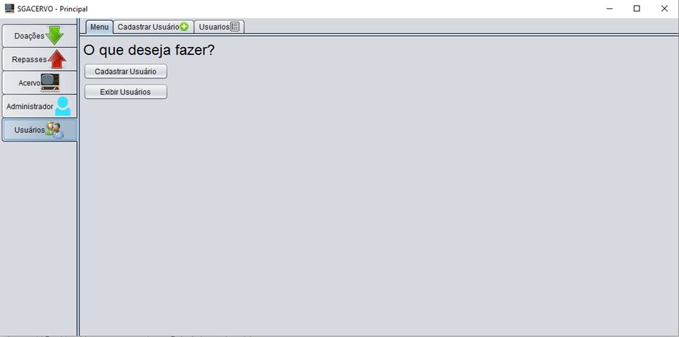

Manual do Usuário Administrador
Conteúdo
Alem das funcionalidades de usuario comun o administrador do Sistema possui funcionalidades especificas de gerenciamento de usuarios
|  |
Na Aba Usuários os usuarios adminstradores tem a opção de exibir e cadastrar usuarios que podem ser acessadas pelos botões ou pelas abas, assim como mostrado na imagem acima.
Para cadastrar um novo Usuário preencha todos os campos mostrados na interface e selecione se será administrador entao clique Cadastrar.
Na aba Usuários são listados todos os usuários cadastrados no sistema. Para alterar um usuario clique na sua linha e entao clique no primeiro ícone na direita que abrira uma tela para fazer as alterações necessarias.